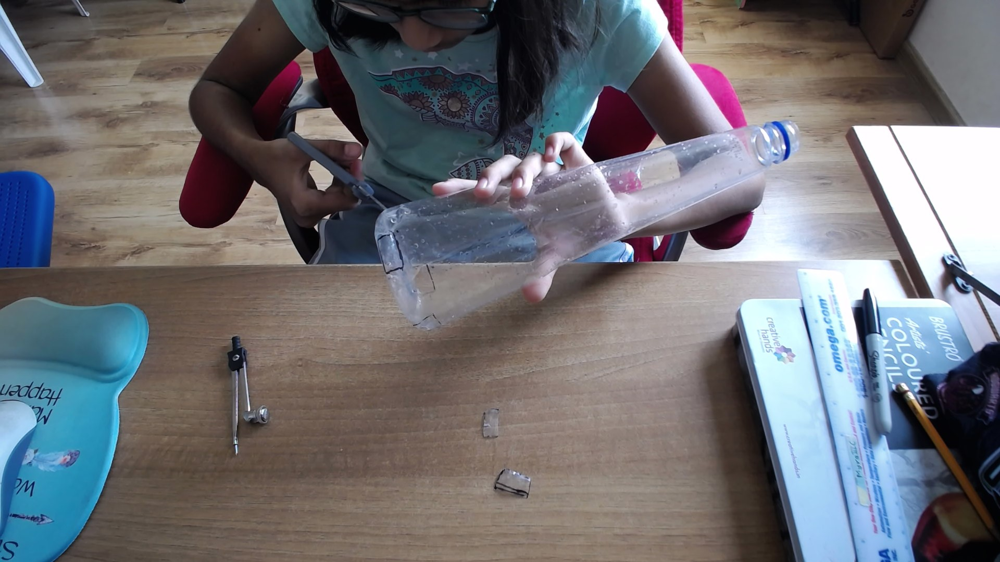
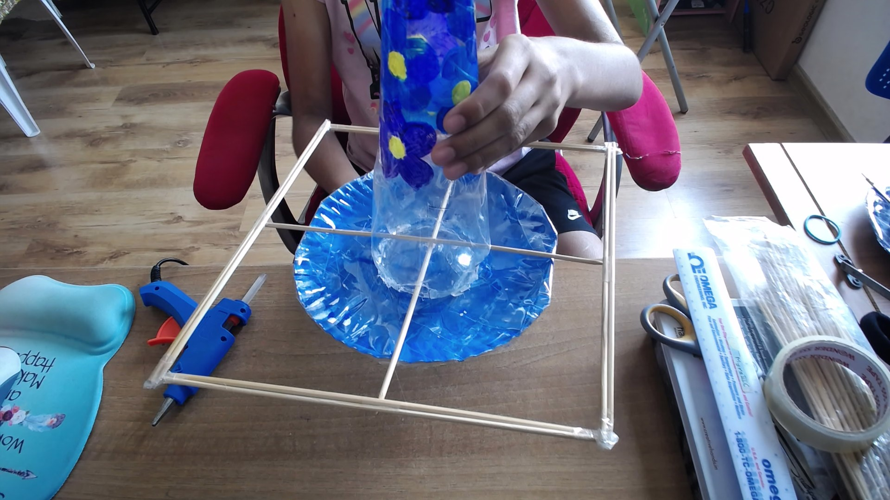

How To Build Your Own Bird-Feeder (In 10 Easy Steps)
Materials Required:
- 1 washed medium sized (conical if possible) plastic bottle
- 2 8-inch diameter paper plates
- Floral wire
- 10 13-inch sticks
- Scissors/blade/puncturer
- Hot glue stick & hot glue gun
- Strong craft glue (I used Elmer's Glue-All)
- Tape
- Cerulean blue (or any medium-blue shade), purple, and yellow paint
- Black Sharpie (although any sketchpen that shows up on plastic is fine)
- Cardboard (2 stiff 6 inch diameter circular pieces)
Steps:
1. Mark out 4 1" (width) by 0.5" (height) rectangles spaced equally around the base of the plastic bottle across from each other, like a cross. Cut these out using scissors, a pucnturer (such as a mathematical compass) or a blade.
These will be the holes that your birdseed comes out of. Cover the edges of the holes with tape, so that there are no sharp edges that could be potentially harmful to birds (and you!)

2. Glue the 2 stiff 6 inch diameter circular cardboard pieces to the bottoms of the aluminum plates with the craft glue, and then strenghten it with hot glue.
3. Paint the bottle! You can do this however you like to, but I painted my bottle with blue, dark blue and purple flowers. Paint the aluminum plates as well. I used blue and purple because based on an experiment I conducted with a friend's birds and her
birds were interested in these colors. However, if the birds in your area like another color scheme, go with it!
4. Cover the paint and the bottles in tape because we do not want the birds ingesting the paint and getting sick. My tape didn't stick to the plates very well (but I still used it). If you have other ways to do it, use those, as long as they're waterproof
and food-safe. I suggest using transparent perforated sheets, the kind you use in portfolios. The whole point of this step is to somehow laminate the painted areas.
5. Make the perches. I used 10 13-inch sticks to do this, but you can use bigger or smaller sticks to do this step, depending on the sizes of the birds in your area. I used skewer sticks, and since since they're pretty thin, I needed 4 extra sticks to
make the perch areas thick enough. I taped two sticks together, side by side to increase the width and make it 'one' stick. If you're using sticks like mine, you need four of these 'double sticks'. If your sticks are thicker, you only need 6 sticks.
First, take two sticks (if you're using thin sticks, these do not have to be 'double sticks', normal ones are okay). Apply a dot of hot glue to the center of the first stick and poke it through the base holes in the bottle. Press the stick to the base.
Do the same to the other stick and put it though the remaining holes on top of the first stick. They should make an 'x' formation.
7. Now take 2 'double sticks' and apply hot glue to the middles. Press these to both of the ends of one of the sticks. Do the same on the other side, and glue the ends of the 'double sticks' together at the joints and make sure that the sticks
from the first round are under the sticks from the second layer. Tape the sharp edges off. It should look like this:

8. Make a hole in the bottlecap and the middle of the bottom of the top plate. Tape the bottlecap to the middle of the bottom of the top plate (too many prepositions, I know, but I hope it makes sense.) Put hot glue around the edges of the bottlecap.
Now take a short length of floral wire, put it through the holes (which should be aligned with each other) and twist the bottom part of the wire to secure the cap to the plate. Shape the top of the wire into a small loop (this will be used later).
9. Mark out two spots across from each other somewhere near 1/3 boundary of the bottle from the top using the marker. Mark out holes across from each other on the top plate as well, about an inch from the boundary of the cardboard circle on either side.
Take the blade or puncturer and make the holes. Take a long piece of floral wire and thread it through the holes in the bottle. Bend it upwards to go through the holes in the plates and thread them onto the other side (like a cross) though the loop
that was made earlier. Then, join the ends by twisting them together in a big loop.

2. Glue the 2 stiff 6 inch diameter circular cardboard pieces to the bottoms of the aluminum plates with the craft glue, and then strenghten it with hot glue.
3. Paint the bottle! You can do this however you like to, but I painted my bottle with blue, dark blue and purple flowers. Paint the aluminum plates as well. I used blue and purple because based on an experiment I conducted with a friend's birds and her birds were interested in these colors. However, if the birds in your area like another color scheme, go with it!
4. Cover the paint and the bottles in tape because we do not want the birds ingesting the paint and getting sick. My tape didn't stick to the plates very well (but I still used it). If you have other ways to do it, use those, as long as they're waterproof and food-safe. I suggest using transparent perforated sheets, the kind you use in portfolios. The whole point of this step is to somehow laminate the painted areas.
5. Make the perches. I used 10 13-inch sticks to do this, but you can use bigger or smaller sticks to do this step, depending on the sizes of the birds in your area. I used skewer sticks, and since since they're pretty thin, I needed 4 extra sticks to make the perch areas thick enough. I taped two sticks together, side by side to increase the width and make it 'one' stick. If you're using sticks like mine, you need four of these 'double sticks'. If your sticks are thicker, you only need 6 sticks. First, take two sticks (if you're using thin sticks, these do not have to be 'double sticks', normal ones are okay). Apply a dot of hot glue to the center of the first stick and poke it through the base holes in the bottle. Press the stick to the base. Do the same to the other stick and put it though the remaining holes on top of the first stick. They should make an 'x' formation.
7. Now take 2 'double sticks' and apply hot glue to the middles. Press these to both of the ends of one of the sticks. Do the same on the other side, and glue the ends of the 'double sticks' together at the joints and make sure that the sticks from the first round are under the sticks from the second layer. Tape the sharp edges off. It should look like this:
8. Make a hole in the bottlecap and the middle of the bottom of the top plate. Tape the bottlecap to the middle of the bottom of the top plate (too many prepositions, I know, but I hope it makes sense.) Put hot glue around the edges of the bottlecap. Now take a short length of floral wire, put it through the holes (which should be aligned with each other) and twist the bottom part of the wire to secure the cap to the plate. Shape the top of the wire into a small loop (this will be used later).
9. Mark out two spots across from each other somewhere near 1/3 boundary of the bottle from the top using the marker. Mark out holes across from each other on the top plate as well, about an inch from the boundary of the cardboard circle on either side. Take the blade or puncturer and make the holes. Take a long piece of floral wire and thread it through the holes in the bottle. Bend it upwards to go through the holes in the plates and thread them onto the other side (like a cross) though the loop that was made earlier. Then, join the ends by twisting them together in a big loop.